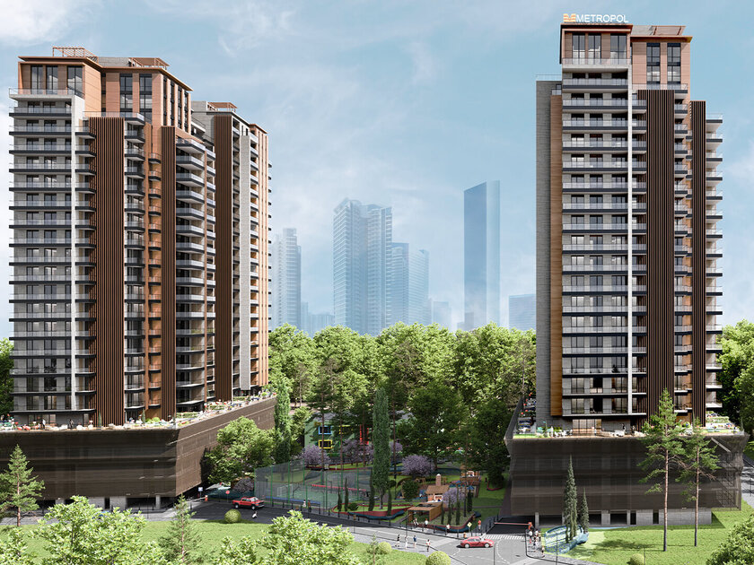

Ольга: 2+1 в Метрополе — жить с 2028 года или сдавать
Один лот, два сценария. Цена застройщика, рассрочка 15% на год, взнос банку 30%,
ипотека 70%, ремонт 3 месяца. Ниже — сколько нужно своих денег на каждом шаге.

Metropol Kavtaradze · ул. Владимира Угрехелидзе, 15 · визуализация застройщика
01Объект и локация
Metropol Kavtaradze — две башни по 25 этажей в центральной части Тбилиси,
ул. Владимира Угрехелидзе, 15, район Кавтарадзе. Сдача по презентации застройщика — II квартал 2027.
Дом: две башни по 25 этажей, современные стандарты, энергоэффективные материалы.
Двор: 1 гектар рекреационной зоны — прогулочные дорожки, футбольное поле,
игровая и спортивная площадки, зоны отдыха, павильон для отдыха.
В доме: детский сад, лобби с консьержем.
Рядом: City Mall — 3 минуты, метро «Важа-Пшавела» — 8 минут.
Университеты: Тбилисский государственный университет, Медицинский университет;
рядом территория бывшего ипподрома и парк.
Этаж и вид: 21 из 25 — верхние линии, город и горы.
Ипотека 70% под 10% на 10 лет: платёж 1 563 $/мес,
за год 18 759 $. Первоначальный взнос банку — 30% стоимости, то есть 50 696 $:
15% уже внесены рассрочкой, ещё 15% (25 348 $) платим в декабре 2027.
Это модель, а не предложение банка — ставку и взнос подтверждает банк.
04Ремонт: декабрь — февраль
Жилая площадь (2 спальни + гостиная)
46,0 м²
Ставка ремонта
650 $/м² жилой
Ремонт с мебелью
29 900 $
Срок
3 месяца: декабрь 2027 — февраль 2028
Своих денег до заселения: 15% рассрочкой 25 348 $ + 15% взноса банку 25 348 $
+ ремонт 29 900 $ = 80 596 $. Дальше — либо живём, либо сдаём.
05Сценарий А — жить с 2028 года
Заезд весной 2028, после трёх месяцев ремонта. Квартира не приносит аренду, но и не требует доплаты сверх ипотеки.
Своих до заселения80 596 $
Ипотека в месяц1 563 $
Платежи в год18 759 $
Аренда0
06Сценарий Б — сдавать за 1 300 $
Аренда 1 300 $/мес закрывает большую часть ипотеки. Разницу доплачиваем из своих.
Аренда в год15 600 $
Ипотека в год18 759 $
Доплата в месяц263 $
Своих за первый год сдачи83 755 $
Валовый доход от аренды 9,2% от цены покупки в год.
Простои, коммунальные и налог с аренды здесь не учтены.
07Цена к сдаче: рынок и рост
Ориентир
Цена метра
Стоимость квартиры
Рост к покупке
Покупка сейчас
2 360 $/м²
168 987 $
—
Подобные проекты в районе
2 500 $/м²
179 000 $
+5,9%
Ожидание к декабрю 2027
2 900 $/м²
207 640 $
+22,9%
Ожидание, верхняя граница
3 000 $/м²
214 800 $
+27,1%
Что это значит. Покупка по 2 360 $/м² уже ниже рынка подобных проектов
(2 500 $/м²). К моменту сдачи ожидаем 2 900–3 000 $/м²: это +38 653 $…+45 813 $
к цене входа. Рост — прогноз, а не гарантия: он держится на сроках сдачи и спросе района.
08Почему этот лот
Вход ниже рынка: 2 360 $/м² против 2 500 $/м² у похожих домов района.
Рассрочка 15% на 12 месяцев — вход растянут, ипотека нужна только в декабре 2027.
2+1 на 21 этаже (кв. 2115): два формата жизни — семья живёт или квартира сдаётся.
Двор на 1 гектар, детский сад в доме, метро и City Mall рядом — ликвидность при перепродаже.